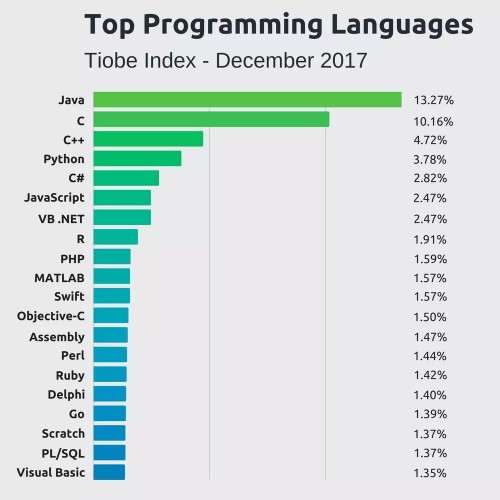
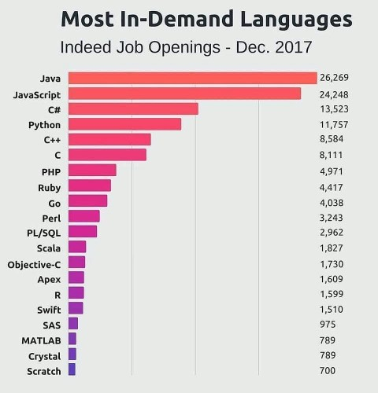

Topul limbajelor de programare conform popularității
Pentru decenii, Tiobe (companie de asigurare a calității software) a generat un index al celor mai populare limbaje de programare. Această listă, mai bine zis, este actualizată lunar, folosindu-se date din sute de surse din jurul lumii. Pentru mai multe detalii asupra cum Indexul Tiobe este calculat precis, puteți vizita acest site.
Graficul alăturat prezintă topul celor 20 mai populare limbaje de programare din Decembrie 2017. Indexul Tiobe funcționează precum cota de piață; procentul reprezintă "cota" fiecarei limbi în parte. Toate limbajele însumează astfel 100%.
Tiobe consideră variabile precum numărul de developeri profesioniști la nivel mondial, cursuri de învățare și furnizorii terțiari. Majoritatea informațiilor, însă, provin din analiza rezultatelor motoarelor de căutare.
Topul limbajelor de programare conform cerinței de pe piață
Cu statutul de cel mai mare motor de căutare pentru locuri de muncă, Indeed.com oferă o bună estimare a celor mai cerute locuri de muncă în programare; prin urmare, graficul alăturat a fost format pe baza datelor sustrase de pe acest site.
Primele 50 cele mai populare limbi de pe Indexul Tiobe au fost căutate in sintagma "("Language name") Developer" pentru a fi analizate rezultatele.
Tabel al variației celor top 10 limbaje de programare (1987 - 2017)
| Limbaj de programare | 2017 | 2012 | 2007 | 2002 | 1997 | 1992 | 1987 |
|---|---|---|---|---|---|---|---|
| Java | 1 | 2 | 1 | 1 | 15 | - | - |
| C | 2 | 1 | 2 | 2 | 1 | 1 | 1 |
| C++ | 3 | 3 | 3 | 3 | 2 | 2 | 4 |
| C# | 4 | 5 | 7 | 11 | - | - | - |
| Python | 5 | 7 | 6 | 12 | 27 | 16 | - |
| Visual Basic .NET | 6 | 14 | - | - | - | - | - |
| JavaScript | 7 | 9 | 8 | 7 | 20 | - | - |
| PHP | 8 | 6 | 4 | 5 | - | - | - |
| Perl | 9 | 8 | 5 | 4 | 3 | 8 | - |
| Delphi/Object Pascal | 10 | 11 | 11 | 8 | - | - | - |
| Lisp | 31 | 12 | 15 | 13 | 8 | 4 | 2 |
| Prolog | 32 | 30 | 26 | 15 | 17 | 13 | 3 |